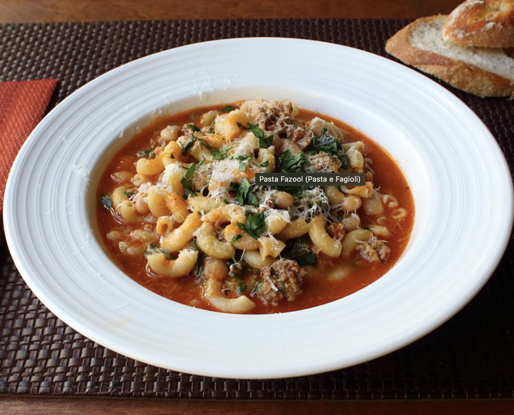

Pasta Fazool Recipe

Description
Pasta Fazool is one of my favorite dishes. It brings me right back to grandma's house.
Of course when I was a small child I refused to eat the cannalini beans, so really it
was just a bowl of elbow macaroni with some thin tomato sauce. Now-a-days, I make it
with plenty of beans and extra fixins.
- 1 tbsp olive oil
- 12 ounces sweet italian sausage
- 1 stalk of celery, diced
- 1/2 yellow onion, chopped
- 3/4 cup elbow macaroni
- 1/4 cup tomato paste
- 3 - 4 cups chicken broth
- 1/4 tsp crushed red pepper flakes
- 1/4 tsp dried oregano
- Salt and pepper to tast
- 3 cups spinach
- 1 (15 oz) canned cannelini beans
- 1/4 cup graded parm
Steps
- Heat the olive oil in a 12 inch skillet, add the sausage and brown.
- Sweat the onions and celery for 3 - 5 minutes.
- Toss the elbow macaroni in the oily mix for 2 minutes
- Add the tomato paste and cook on low-medium for a few minutes to remove the raw flavor
- Add the chicken broth and bring to a boil
- Cook the pasta for about 6 minutes
- Add the spinach and let wilt for a few minutes
- Add cannelini beans and parm, keep on heat for a few more minutes to warm the beans
- Enjoy!